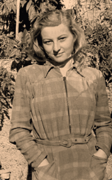
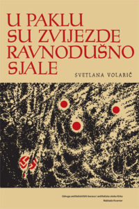
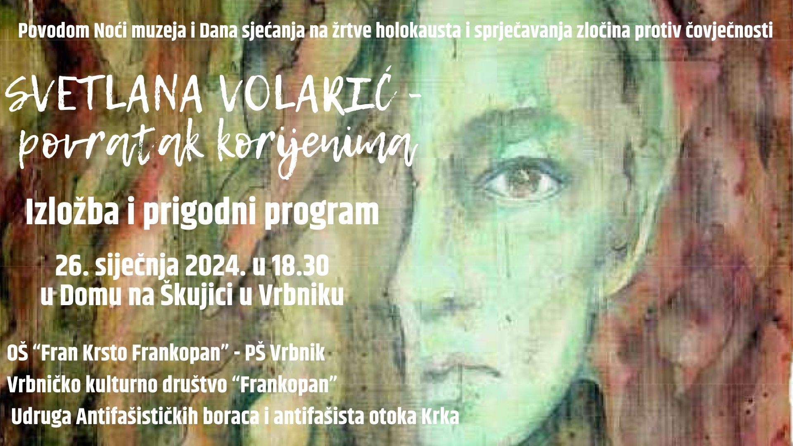
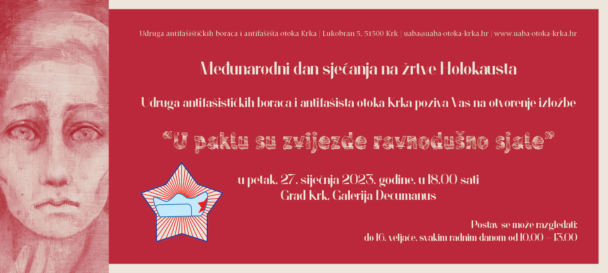

Svetlana Volarić
Rođena je 23. svibnja 1925. godine u Taškentu SSSR od mame Jelene
Černiševe Ruskinje i oca Vjekoslava Volarića iz Vrbnika. Umrla je u
Zagrebu 14. siječnja 2002.
Svetlani Volarić je bilo 15 godina kada su je Talijani osudili na smrt.
Žrtva kapitulacije. Niti 16 joj nije bilo i ponovo su je zgrabili – sada
Nijemci. Započela je put patnje, koji je donosi u Auschwitz, Ravensbrück i
Wittenberg. Preživjela je. Bila je mlada i otporna. Vratila se u domovinu,
na otok Krk, školovala i postala spisateljica i slikarica.
Sa samo 16 godina Svetlana Volarić, poput drugih vršnjakinja diljem

pokorene Europe, dovedena je u “najmoderniji” koncentracijski logor u na
cističkoj Njemačkoj – Auschwitz. Ovo je priča o strahotama zatvora za
nevine. To su bili zatvori gdje su djeca bila optužena kao politički
zločinci. To su bili logori gdje se čovjeka ponižavalo fizički ali i
psihički. Iznurivalo se besmislenim poslovima. U tom paklu ono što je
najviše ljutilo i lomilo psihu ljudi bilo je nebo. Njegova spokojnost je
izluđivala. Mnogi su se pitali kako može biti tako ravnodušno, kao da se
pod njim ne događaju strahote. Ali unatoč proklinjanju nebo je i da lje
ostajalo mirno i spokojno. Zrak težak i zagađen dimom obližnjeg
krematorija čiji su plamenovi sablasno lizali nebo slabio je ljude svakim
danom sve više i više dok god se i oni sami ne bi našli u tim
krematorijima. Ali unatoč boli i jezi nisu odustajali. Borili su se za
dostojanstvo i goli život.

Zahvaljujući Udruzi antifašističkih boaraca i antifašista otoka Krka
knjigu "U paklu su zvijezde ravnodušno sjale" možete preuzeti besplatno.
Preuzimanje
Ono što ovu knjigu izdvaja od ostalih, jest jedna toplina iliti jasno
demonstrirana ljudska potreba da se zlo potisne u drugi plan, a da ono
dobro izađe u prvi, odnosno da ljubav prestigne mržnju, a razumijevanje
želju za osvetom. (Franjo Butorac, 2015.)
U cijelosti prenesen tekst sa noc-muzeja.hr
Izložba: Vrbničko kulturno društvo FRANKOPAN

Noć muzeja u Vrbniku povodom Dana sjećanja na žrtve holokausta i
sprječavanja zločina protiv čovječnosti bit će posvećena slikarici i
književnici vrbničkih korijena SVETLANI VOLARIĆ (1925.-2002.) koja je sa
16 godina preživjela čak tri koncentracijska logora: Auschwitz,
Ravensbrück i Wittenberg, a svoja potresna iskustva pretočila je u slike
i riječi. Po prvi put će njezino stvaralaštvo biti prezentirano u
Vrbniku. Bit će otvorena izložba pod nazivom "SVETLANA VOLARIĆ -
POVRATAK KORIJENIMA" te održan prigodni glazbeno-scenski program učenika
vrbničke osnovne škole "U PAKLU SU ZVIJEZDE RAVNODUŠNO SJALE".
Učiteljice povijesti održat će kratka predavanja o holokaustu i
stradanju Vrbenčana u Drugom svjetskom ratu.
18.30 - 18.45 Otvorenje izložbe Bit će izložene slike
inspirirane logoraškim iskustvima tijekom Drugog svjetskog rata te slike
zavičajne tematike inspirirane otokom Krkom uz uspomene na baku njezina
unuka Andrea Zvonimira Crnkovića.
18.46 - 19.00 GLAZBENO-SCENSKI PROGRAM "U PAKLU SU ZVIJEZDE
RAVNODUŠNO SJALE"
Inspiriran je istoimenom knjigom Svetlane Volarić, a izvest će ga
učenici osmaši vrbničke osnovne škole.
19.01 - 19.15 PREDAVANJE "HOLOKAUST"
Održat će učiteljica povijesti Iva Dujmović.
19.16 - 19.30 PREDAVANJE "VRBNIK U BURI DRUGOG SVJETSKOG
RATA"
Održat će učiteljica povijesti Dina Valković.
19.31 - 19.45 UČENIČKI RADOVI "SVJEDOČANSTVA NAŠIH PREDAKA"
Bit će prikazani učenički radovi u okviru projekta "PROŽIVLJENA
POVIJEST".
U cijelosti prenesen tekst sa bodulija.net
Međunarodni dan sjećanja na žrtve Holokausta: Otvorenje izložbe “U
paklu su zvijezde ravnodušno sjale”
Ovim postavom kojim će dominirati potresni slikarski portreti Svetlane
Volarić inspirirani njezinim logoraškim danima, na simboličan se način
odaje počast svim otočankama i otočanima (ali i ostalim žrtvama) koji su
svoje živote izgubili u talijanskim i njemačkim konclogorima
U zajedničkoj organizaciji Udruge antifašističkih boraca i antifašista
otoka Krka i Centra za kulturu Grada Krka, obilježavanje Međunarodnog
dana sjećanja na žrtve Holokausta održat će se u krčkoj Galeriji
Decumanus, u petak, 27. siječnja 2023. godine, kojom prigodom će, u
18.00 sati, biti otvorena izložba U paklu su zvijezde ravnodušno sjale.
Postav će združiti slikarske i literarne radove Svetlane Volarić, kao i
radove učenika Osnovne škole Fran Krsto Frankopan Krk.
Međunarodni dan sjećanja na žrtve Holokausta počevši od 2005. godine,
sukladno odluci Ujedinjenih naroda, svake se godine obilježava 27.
siječnja, sa zadaćom očuvanja sjećanja na žrtve Holokausta, kao i
poticanja razvoja obrazovnih programa o genezi i povijesti Holokausta,
čime se želi pokazati odlučnost u pomaganju sprečavanja čina genocida u
budućnosti.
Ovim postavom kojim će dominirati potresni slikarski portreti Svetlane
Volarić inspirirani njezinim logoraškim danima, na simboličan se način
odaje počast svim otočankama i otočanima (ali i ostalim žrtvama) koji su
svoje živote izgubili u talijanskim i njemačkim konclogorima,
educirajući, pritom, mlade o opasnostima pojedinih ideologija koje su u
jednom povijesnom trenutku, i ne toliko davnom, rezultirale sramotnim
Holokaustom.
Izložba U paklu su zvijezde ravnodušno sjale javnosti će biti dostupna
sve do 16. veljače, svakim radnim danom od 10.00 do 13.00 sati ili uz
prethodnu najavu Centru za kulturu Grada Krka telefonom na 051 220 041
ili mailom na
kultura@gradkrk.net.

Slikarica i književnica Svetlana Volarić intenzivnije se započinje
baviti slikarstvom nakon smrti oca, slikara, rodom iz Vrbnika. Završila
je likovni smjer na VPŠ u Zagrebu. Upisala je Akademiju likovnih
umjetnosti u Ljubljani i Filozofski fakultet u Zagrebu, no udajom je
prekinula studije. Izdala je dvije knjige i surađivala s različitim
časopisima. Slikala je i izlagala samostalno te s Grupom ’69., u zemlji
i inozemstvu. Slikanjem i pisanjem progovarala je o otoku Krku, njegovim
krajolicima, ljudima, ženama te ratnim zbivanjima i miru. Koristila se
svim slikarskim tehnikama jer je zanat savladala još uz oca.
U cijelosti prenesen tekst sa kulturpunk.hr
U paklu su zvijezde ravnodušno sjale
27.01.2012 - 10.02.2012, Krk - Galerija Decumanus
Izložba će biti održana povodom Međunarodnog dana sjećanja na žrtve
holokausta.
Otvorenje izložbe u organizaciji Udruge antifašističkih boraca i
antifašista otoka Krka je u petak, 27. siječnja u 18 sati.
Postav koji sjedinjuje povijesno istraživanje Mirele Caput i Ines
Grgurine, slike Svetlane Volarić, ali i nekolicinu zanimljivh artefakata
iz otočke povijesti, ostaje otvoren do 10. veljače, a moguće ga je
razgledati svakim radnim danom od 10 do 12, te od 17 do 19 sati.